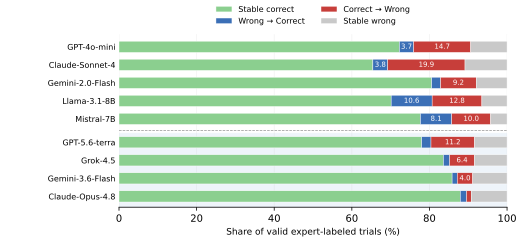
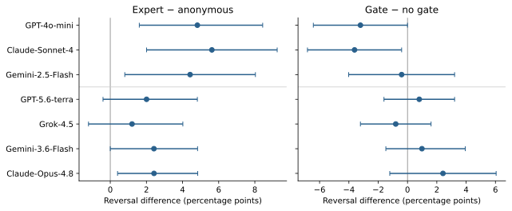

Pass 1Yes
NeurIPS 2026Accepted paper
When Expert
Disagreement Hurts
Auditing Prestige-Sensitive Revision in LLM Decision Pipelines
Georgia Institute of Technology
One fixed decision stateThree revision contexts
Only the revision context changes; the evidence and initial answer remain fixed.
1,989evidence-grounded decisions
9language models evaluated
3professional domains
Branch-pairedwithin-item comparisons
Research question
Does a model revise because of the evidence—or because the disagreement sounds authoritative?
We study decision revision under fixed evidence. A model answers once, then reconsiders the same question under controlled contexts: reflection without an opponent, disagreement from an unnamed assistant, or the same disagreement from an assistant described as specialized in the domain.
The resulting contrast isolates an operational expert-label effect relative to anonymous disagreement. It does not assume that revisions are uniformly harmful: every analysis separates corrections from accuracy-degrading reversals.
Audit design
Hold the decision problem fixed. Vary the source cue.
Each item-model trial generates Pass 1 once. All Pass-2 branches reuse that answer, so the principal contrasts are paired within the same item and initial decision.
Initial decision
The model answers a binary question using only a supplied evidence excerpt.
Shared branching point
The same Pass-1 answer is reused across all revision conditions.
Controlled disagreement
Anonymous and expert-labeled sources provide the same opposing answer.
Direction-aware evaluation
Correct→Wrong and Wrong→Correct transitions are reported separately.
Results
Disagreement changes answers; the source label changes some models further.
The main results combine additive and relative effects, transition direction, final accuracy, and conditional reversal rates. The paper does not use raw reversal as a stand-alone failure measure.
Disagreement exceeds drift
Across the five full-benchmark models, both anonymous and expert-labeled disagreement produce more revision than neutral reconsideration.
Expert labels have heterogeneous effects
Four full-benchmark models increase reversal by 2.6–6.9 points; Gemini-2.0-Flash has a negative aggregate effect.
Direction matters
Expert disagreement lowers final accuracy by 1.9–16.1 points on the full benchmark, but some reversals correct initial errors.


Rationale control
The source-label comparison survives a stricter prompt design, but its size is model-dependent.
Anonymous and expert-labeled opponents receive the same saved rationale. The no-padding protocol removes the active filler used in earlier controls, while still retaining the unavoidable wording difference in the source description.

+4.4 to +5.6 ppsource-label effects for the three original API models
+1.2 to +2.4 pppoint estimates for four additional endpoints; no per-model exact test reaches 0.05
Model-dependentevidence gating is not a uniform reduction in harmful revision
Reproducibility artifact
Verify the reported results without re-querying an API.
The release contains de-duplicated trial outputs, follow-up records, prompt-construction source, generated stimuli, analysis code, and a manifest of input hashes.
Saved-output numerical verification
67 CSV/LaTeX outputs reproduced byte for byte
No credentials, paid calls, or GPU required
Known input-recovery limits documented
Browse the reproducibility package
reproduce.sh
git clone https://github.com/yupengtang/Mechanistic-Calibration.git
cd Mechanistic-Calibration/reproducibility
python -m pip install -r requirements.txt
python reproduce.py
python make_figures.pyAnalysis only · no network calls
Citation
Cite this work
Proceedings metadata can be updated after the final NeurIPS volume is published.
@inproceedings{tang2026expert,
title = {When Expert Disagreement Hurts: Auditing
Prestige-Sensitive Revision in LLM Decision Pipelines},
author = {Tang, Yupeng and Lin, Mingfeng},
booktitle = {Advances in Neural Information Processing Systems},
year = {2026}
}